基本概念
- Bandwidth信道带宽：\(f_{max} - f_{min}\)，单位Hz；
- Analog Bandwidth，模拟信号用Hz表示；
- Digital Bandwidth，数字信号用bps（bit per second）表示；
- Low-pass channel，低通信道，\(f_{min} = 0\)；
- Band-pass channel，带通信道，\(f_{min} > 0\)；
- Bit Rate(bps)：比特率；
- Baud
Rate(Baud)：波特率，每秒钟表示bit所需的信号单元的数量；
- T：一个信号单元的时间；
- Baud Rate = \(\frac {1}{T}\)；
- Bit Rate = Baud Rate \(\times\) 一个信号单元携带的bit数 = Baud Rate \(\times\) \(log_2 {有效状态数}\)；
- 信道容量：信道的最大数据率；
- 吞吐量：单位时间内网络可以传送的数据位数，单位bps；
- 负载Load：单位时间内注入网络的数据位数，单位bps；
- 误码率；
- Delay时延：第一位开始发送与最后一位数据被接受的时间差；
- 发送时延Transmission
Delay：发送一个数据块需要的时间；
- Transmission Delay = \(\frac {Message Length(bits)}{Bandwidth(bps)}\)；
- 传播时延Propagation Delay：信号通过传输介质的时间；
- Propagation Delay = \(\frac {length of physical link}{propagation speed in medium}\)；
- 节点处理时延；
- 排队时延；
- 发送时延Transmission
Delay：发送一个数据块需要的时间；
- 带宽时延积bandwidth-delay
product：表示充满整个链路的bit数（有点像体积），表示信道的缓存能力；
- Bandwidth-Delay Product = propagation delay \(\times\) bandwidth；
信道
Noiseless Channel 无噪信道
理想信道的比特率通过Nyquist Bit
Rate（奈奎斯特公式，1924）给出：
\[
C(Capacity) = Bit Rate = 2 \times bandwidth\times
log_2{信道级数(即有效状态数)}
\]
注意上述公式给出的是理想情况下最大可能的传输速率；
## Noisy Channel 有噪信道
有噪信道的传输速率通过Shannon Capacity（香农公式，1948）给出：
\[
Capacity = bandwidth\times log_2{1 + \frac{signal\_power}{noise\_power}}
\]
其中，信噪比(SNR，Signal-to-Noise Ratio)
又可以取对数用db(decibels)来表示：
\[
S/N_{db} = 10log_{10}{(S/N)}
\]
传输介质Transmission Media
传输介质的分类
- 磁介质Magnetic Media
- 导向型（有线）
- Twisted Pair双绞线
- Coaxial Cable 同轴电缆
- Fiber Optics光纤
- Power Lines电力线
- 非导向型（无线）
- Radio无线电
- Microwave地面微波 and Satellite卫星通信
频率范围Electromagnetic Spectrum
- Twisted Pair双绞线：\(0\) ~ \(10^8\)Hz；
- Coaxial Cable同轴电缆：\(10^3\) ~ \(10^9\)Hz；
- Fiber Optics光纤：\(10^{14}\) ~ \(10^{15}\)Hz；（基本属于可见光的范围）
- Radio无线电波：\(10^4\) ~ \(10^9\)；
传输介质的特性
- 带宽
- 传播时延
- 最大传输距离（不加放大器等的情况下）
- 抗干扰能力
- 安全性
- 安装与维护难易程度、成本
有线传输介质
Twisted Pair双绞线
- 两根通电铜导线拧合在一起；（使两根通电导线产生的磁场相互抵消）
- 既能传模拟信号（电话线），又能传数字信号（以太网）；
- 拧得越紧，辐射强度越小，抗干扰能力越强；
- UTP(Unshielded TP) and STP(Shielded TP)；（有屏蔽的双绞线多了一个Metal Shield，能减少向外辐射，减少衰减，增强抗干扰能力）
- Catogory（越大带宽也高）；
Coaxial Cable同轴电缆
- better shielding and greater bandwidth；（带宽大于双绞线）
- 粗缆和细缆
- 50-ohm cable：基带同轴（电话交换机，早期用在以太网上）；
- 70-ohm cable：宽带同轴（适合传输模拟信号，比如电视网）；
- 抗干扰能力也比较强；
Fiber Optic光纤
- 利用了光的全反射；
- 一般是好几根固定在一起作为一根；
- 我们称一种入射角度为一个模：
- Multimode多模光纤：有多种入射角；
- Single-mode单模光纤：只有一种入射角；（光线相互之间干扰很小，带宽更宽）
- 光纤的工作窗口：对应波长/频率的光波适合在这个光纤内传输，损失最小；
- 光纤环网：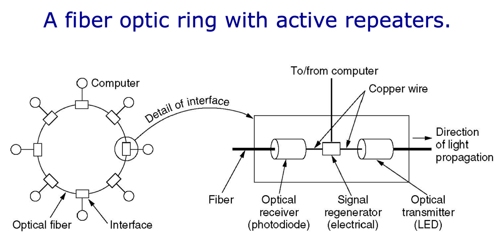
- Opitcal Receiver用于将光信号转化为电信号（光敏电阻）；
- Signal Regenerator用于对电信号进行放大和整形，此时可以选择发送到计算机或者继续传输；
- Optical Transmitter用于将电信号重新转化为光信号（发光二极管）；
- 优点：
- 带宽大；
- 抗干扰能力好，安全；
- 轻便（相较于铜导线）；
无线传输介质
总体来说（相较于有线传输）：
* 误码率更高；
* 传播时延更高；
* 传输损耗更大；
* 安全性也更弱；
* 抗干扰能力更差；
* 带宽不可再生，可用的是有限的；
* 同一个空间内，同一频率会相互干扰；
Radio无线电波
传播方式
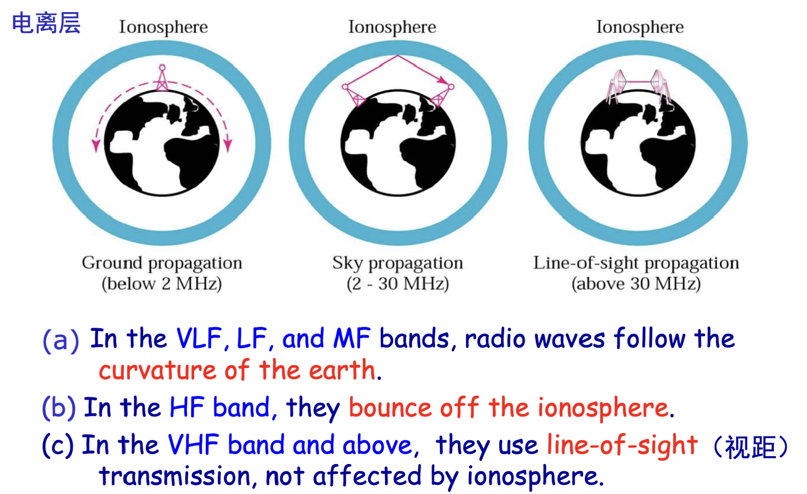
- 较低的频段，波长较大，可以沿地球表面传播；
- 高频，波长较小，沿直线传播，在中继站之间传播；
- 超高频以上，需要用在视距范围内的中继站传播；
Microwave微波
直线传输，适合长距离通信，当需要地面中继站（典型设备：中继器Repeater，进行再生信号，即信号的整形和放大）才能进行远距离；
红外线和可见光通信
略
卫星通信
通信卫星相当于微波通信中中继站Repeater的作用，只不过在大气层以外。
典型设备：Transponder转发器
- 监听由地面天线发出的上行电波；
- 将收到的电波进行Amplify(放大)；
- 将电波以另一种频率的下行电波广播发送给范围内的地面天线；
通信卫星的分类
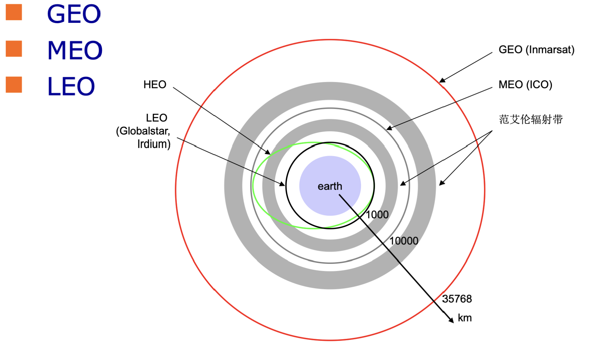
- GEO：地球同步轨道；
- MEO：中地轨道；
- LEO：近地轨道；
轨道高度越高，需要覆盖全球的卫星数量越小，但时延越高；
卫星通信的特点
- Long propagation delay，时延长；
- broadcast media，先天的广播介质；
- 传输成本和传输距离无关；
- 不受地面环境影响；
数字通信系统
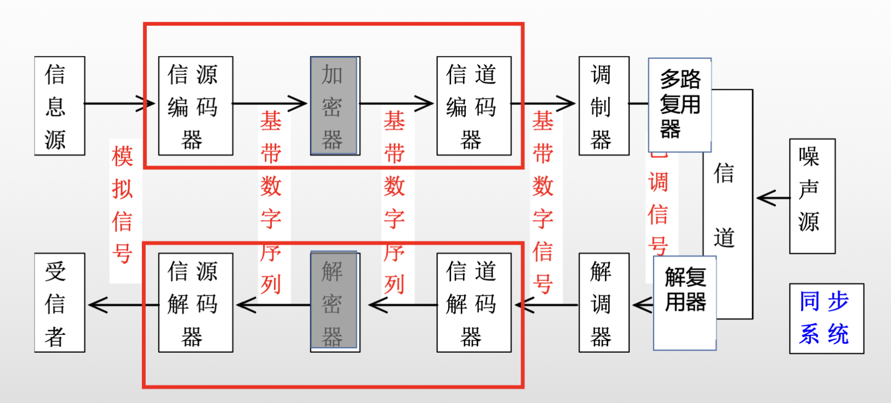
典型设备
- Modem调制/解调器：将信号调整为适合信道传输的频率范围（baseband
signal基带信号 \(\rightarrow\) passband
signal带通信号）；
- 基带信号：\(0\) ~ \(f_{max}\) Hz；
- 带通信号：\(f_{1}\) ~ \(f_{2}\) Hz，\(f_1 > 0\)；
- CodeC编解码器；
- Multiplxer多路复用器：将多路信号复用在一条传输介质上，提高信道利用率；
- 信道编码器：将01信号转化为抗干扰能力更强的方波；
Line Code线路编码
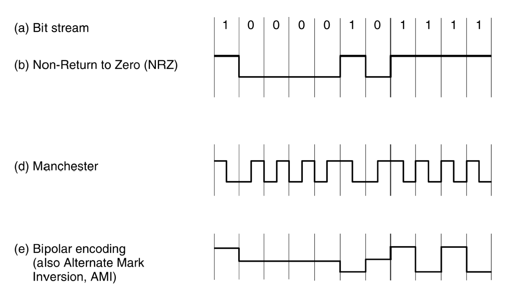
- NRZ不归零编码：抗干扰能力不强；
- Manchester编码：用“low to high”表示0，“high to low”表示1；指定电平的变化必须发生在时钟周期的中间；这样同时传输来信号和时钟，有着自同步功能；
- AMI编码：1用“+1”“-1”间隔表示；
评价指标
- Clock Recovery时钟恢复：能在信号流中提取时钟频率；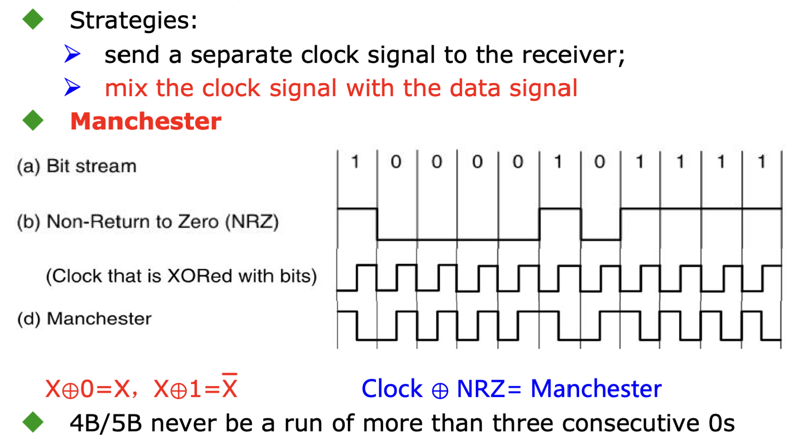
- Balanced Signals平衡信号：消除直流分量；Manchester编码和AMI编码都可以；
- Bandwidth Efficiency信道效率：Manchester编码只有50%；
调制技术Modulation
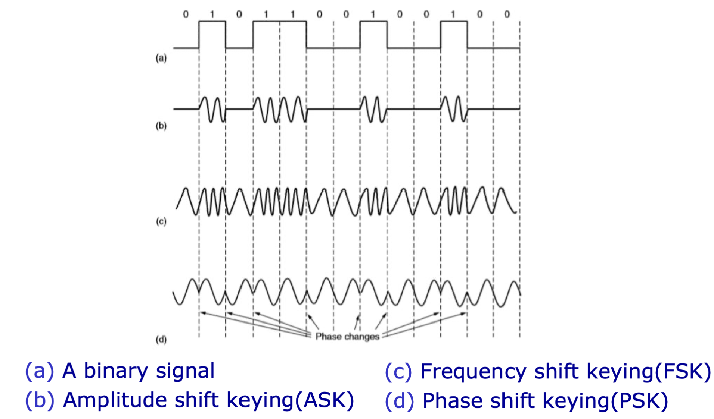
从上到下依次是：
* 原始二进制信号；
* 2ASK：振幅调制（幅移键控）；
* 2FSK：频率调制；
* 2PSK：相位调制；
多级调制技术
同时利用不同的振幅以及相位来表示传输的比特位，从而提高每个信号单元携带的比特数量；
* QPSK：正交相移键控；
* QASK：正交幅度调制；
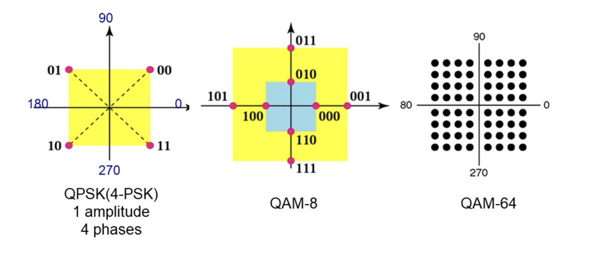
其中：
* 振幅：点与原点的距离；
* 相位：点与原点的连线和x轴的夹角；
模拟信号数字化PCM
PCM：Pluse Coding
Modulation（脉冲编码调制）；
分为以下三个阶段：
* Sampling采样：根据Nyquist
Theory，数字信号的采样率应至少是信号最高频率的2倍。
* Quantizing量化；
* Encoding编码；
典型设备：CodeC编码解码器；
复用Multiplexing
- TDM时分复用；
- FDM频分复用；
- WDM波分复用；
- CDM码分复用；
关键设备Multiplexer
例如，Digital Subscriber Line Access Multiplex(DSLAM，数字用户线接入复用器)；
Frequency Division Multiplexing 频分复用
将多路信号通过傅立叶变换分成频率范围各不相同的信号合成一路进行传输，再通过带通滤波器实现分离；
注意信号之间一般存在保护频带；
Time Division Multiplexing 时分复用
将每路信号在时间上分为多个timeslot(时隙)，信号被分到不同时间片进行发送
#### Synchronous TDM同步时分复用
每一个发送帧Frame都为每路信号保留发送空间，缺点是对于数字信号的传播，一般不连续，易造成资源浪费；在电话网络中应用较广；
Statistical TDM统计/异步时分复用
只发送需要发送的数据，在需要时分复用时才进行复用，但需要加上地址头Address作为用户标识；
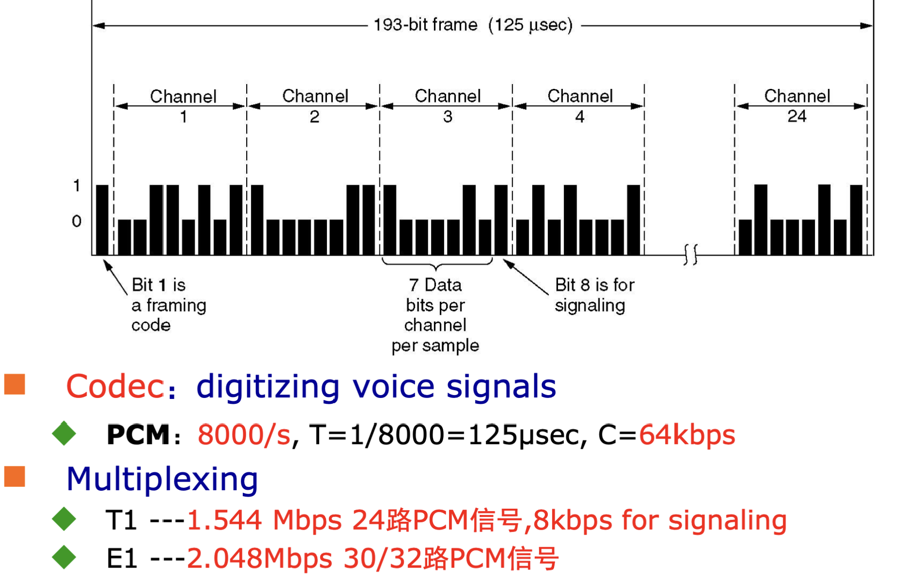
- 其中，T1为24路，E1位30/32路(其中2路为控制信号)；
Code Division Multiplexing码分复用
不同用户可以在任意时间使用整个信号发送信息，不同用户发送的信息通过编码理论进行区分；
比如，在班级里，同学间分为不同小组进行讨论，但不同组用不同语言交流，并且同时大声说话，我需要接受某信息就需要知道该信息的组所用的语言，屏蔽其他组。但如果组越多，噪声越大，就越不容易接受。
Wavelength Division Multiplexing波分复用
波长和频率成反比，所以波分复用和频分复用类似，一般用在Fiber
Optic光纤通信中。
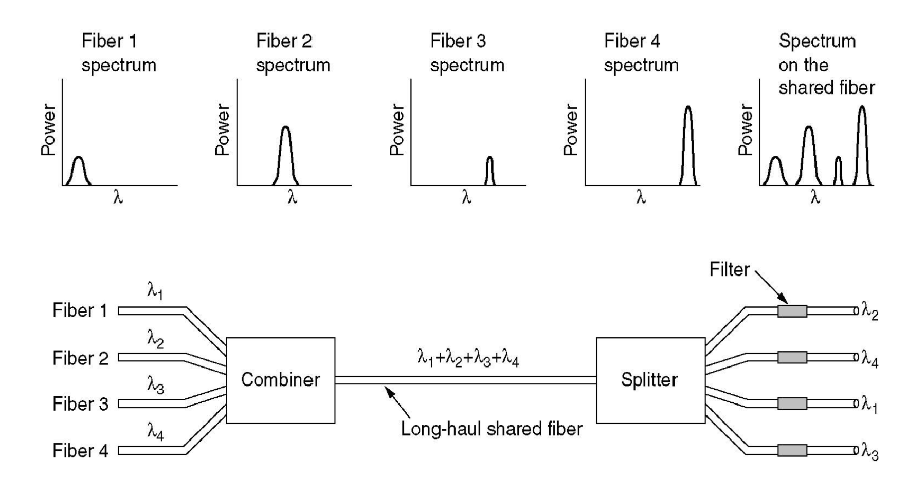
Line Code：线路编码，用于基带传输Baseband Transmission；
Modulation：调制，用于带通传输；
Example: 电话网
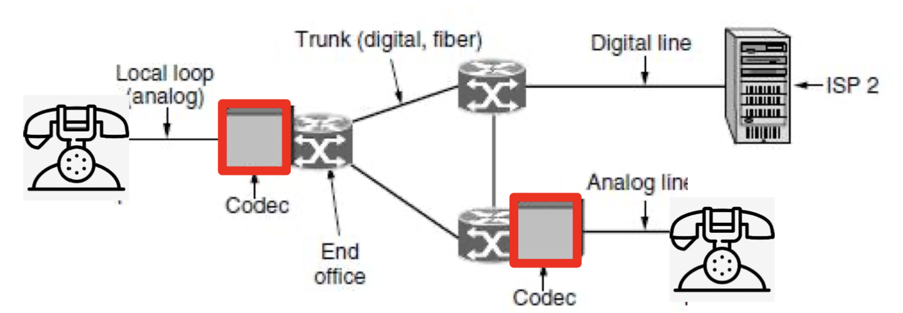
- 首先，语音信号通过Local Loop(本地环路)，到达CodeC(编解码器)，将模拟信号转化为数字信号；
- 语音信号的带宽一般是\(4\)kHz左右，根据Nyquist Theorm，复原该语音信号需要每秒\(8\)k的采样率，即每\(125\)usec采样一次，而\(1 sample = 8bits\)(非线性编码)，所以比特率为\(8k \times 8bits = 64kbps\)；
- CodeC将数字信号通过Trunk(中继线)，继续发往路由器/交换机，其中用到了时分复用；
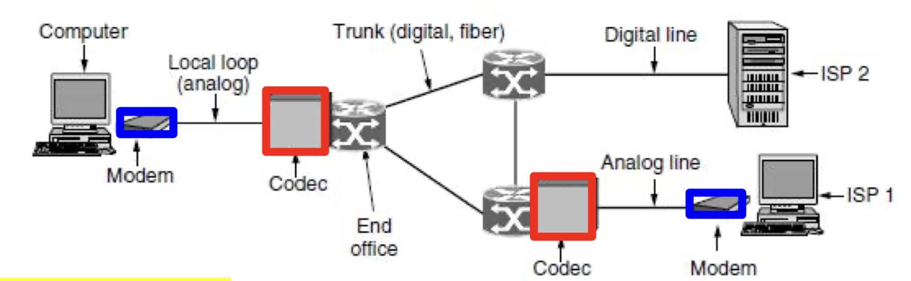
- 电脑通过电话线接入网络，由于电脑发送的是01比特串，所以先通过Modem(调制解调器，使用QAM，正交幅度调制)，将数字信号转化为模拟信号；
- 之后的步骤类似电话网络；
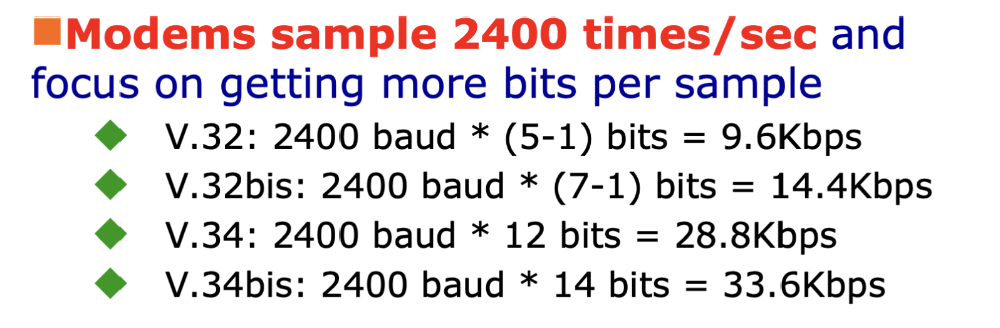
其中，\(-1\)bit是因为1位用于检错；
DSL: Digital Subscriber Lines数字用户线
- DSL在短距离内可以提供较大的带宽；
- 随着距离增加，带宽急剧下降；
ADSL: Asymmetric DSL非对称数字用户线
该服务将本地贿赂上的\(1.1\)MHz频谱分为\(256\)条独立的信道，每条信道的带宽约为\(4.3\)KHz：
* Channel 0用于电话服务(POTS，Plain Old Telephone
Service)；
* Channel 1～4用于保护隔离；
*
剩下的250条信道被分为上行流Upstream和下行流Downstream，其中有2条用于控制，即实际用于传输用户数据的是248条；
技术：DMT(Discrete Multitone Modulation，离散多音调制)
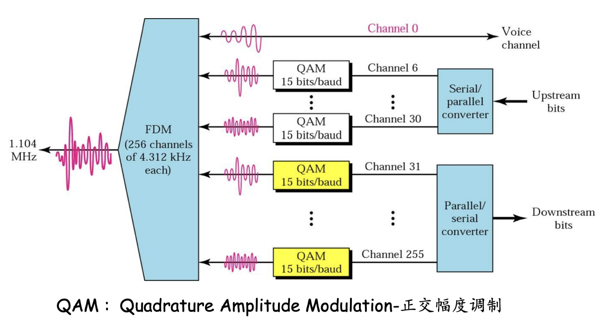
Switching 交换
Circuit Switching电路交换
- 面向连接：
- circuit establishment
- data transfer
- circuit
- 需要提前分配路径和资源；
- 优点：
- Small Delay；
- Good Quality；
- 容易控制；
- 缺点：
- 在建立连接的过程中需要花费较长时间；
- 带宽固定；
- 如果双方不发送数据，会造成信道浪费；
- 例子：电话网
Message Switching报文交换
- 在每个节点，收到的整个消息都被存储到节点内再进行转发；（Store-and-Forward）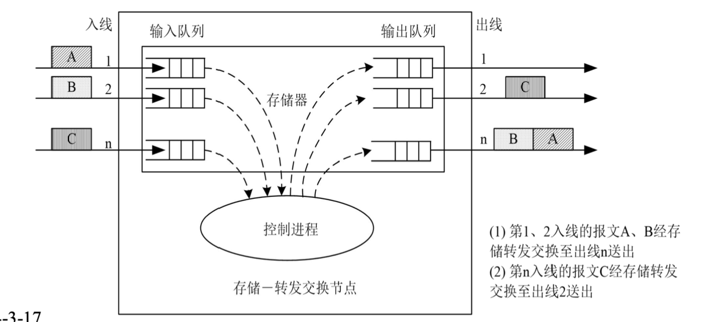
- 缺点：需要开较大的缓存空间，不适合较大的消息；
- 例子：邮局；
Packet Switching分组交换
- 数据在发送前被分为不同的组Packet，再进行传输，每个包独立进行路由选择（显然，每个包都需要携带相应的路由信息），每个包到达节点后进行存储-转发，过程中资源是动态分配的；
- 与电路交换的对比：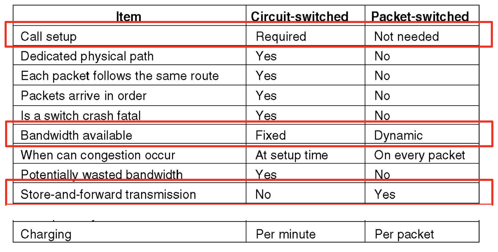
物理层协议
- Mechanical Features机械特性：接口形状和尺寸、引线数目和排列、固定和锁定装置等；
- Electrical Features电气特性：电缆线上的电压范围；
- Functional Features功能特性：某条线上出现的某一电平的电压保持何种意义；
- Procedure Features过程特性：对于不同功能的各种可能事件的出现顺序；